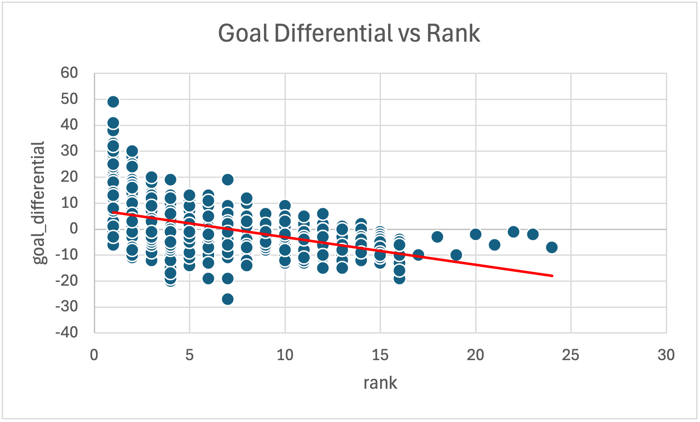

My NHL Playoff Data Analysis
For this project, I conducted an analysis on NHL playoff data to determine if there were indicators from a teams performance during the playoffs that could indicator a teams chance for overall playoff success. To obtain the data I needed, I used Kaggle to find my dataset. I was able to find one dataset that would allow me to examine multiple game performance indicators as a way to predict overall playoff success.
Process for Analyzing the Data
First, the data was downloaded from Kaggle as a csv file.
I then examined the data in a text editor to identify my hypothesis that analysis of the data would help prove or disprove.
I then imported the csv file into Microsoft Excel in order to use Excel’s data analysis capabilities to prove or disprove my hypothesis.
My Hypotheses and how I Tested Them
1. Does having a large goal differential increase the chances of placing higher in the final ranking?
To test this hypothesis I wanted to examine if there was a relationship between the total goal differential in a playoff series and the team’s final ranking. I examined the dataset and found that for every team, there was an indication of the final playoff ranking, and how big of a goal differential they had. These were the two data points that could be used to find a correlation between goal differential and final ranking. In order to determine if there was in fact a correlation, I used the CORREL function in Excel. I then plotted the results into a graph to visualize if there was a correlation.
Based on the correlation coefficient of -0.548 and the scatter plot showing a downward trend, there is a moderate negative relationship between goal differential and rank. Since lower ranks are better (1st place is better than 5th), this means teams with higher goal differentials tend to achieve better ranks.

2. Is the number of shootouts a team engages in an indicator of a better playoff performance?
Once again I examined the dataset and found two data point that could be used to find correlation between the number of shootouts a team engages in and their final ranking. I used the CORREL function in Excel. I then plotted the results into a graph to visualize if there was a correlation.
The correlation between total shootouts and rank is -0.382, indicating a weak negative relationship, meaning teams with more shootouts tend to have slightly better ranks. The scatterplot and average rank by shootout frequency further support this trend.
This module introduces foundational tools for organizing, analyzing, and visualizing data. Learners explore spreadsheets, databases, and visualization software. The focus is on understanding how these tools make data patterns more apparent and actionable, fostering confidence in handling large datasets and summarizing key insights efficiently.
This module delves into the concept of big data—extremely large and complex datasets that require specialized tools for processing. Learners examine the challenges and opportunities big data presents, such as scalability, storage, and computational power.
This module investigates the critical issue of bias in machine learning algorithms. Learners explore how biases can arise from flawed training data, algorithm design, or unintended societal influences.
The Unit Test evaluates the learner’s mastery of key concepts from the unit, including data tools, big data, and bias in machine learning. The test combines multiple-choice and scenario-based questions to assess knowledge application, critical thinking, and problem-solving skills, ensuring a comprehensive understanding of data analysis principles.